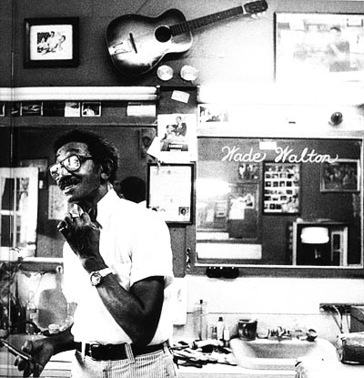
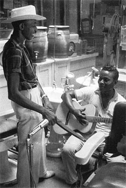

WADE WALTON |

В госпитале Сент-Луиса 10 января 2000 года в возрасте 77 лет умер Уэйд Уолтон (Wade Walton), настоящий блюзмэн старой закалки. Он играл на гармонике и гитаре, а работал парикмахером.

Он родился в 1923 году, в Кларксдейле, Миссиссиппи, один из 17 детей своих родителей. Его брат Hollis "Honey" Walton научил его играть на гитаре, и с раннего возраста Уэйд подрабатывал как музыкант. Но в 17 он получил "настоящую" профессию и в 1943-м начал работать парикмахером в родном Кларксдейле. В 1972 приобрел собственную парикмахерскую. При том он успел поработать на одной сцене с великими: Мадди Уотерсом, Джоном Ли Хукером и Айком Тернером. В 1958 выпустил сольный альбом, а в 60-х записывался для "Arhoolie" и "Bluesville". Был участником многих крупных блюз-фестивалей и множества мелких. В последний раз он выступал на Sunflower River Blues and Gospel Festival в прошлом году. Колоритный персонаж, он блистает в документальных фильмах "Блюзы как дождь проливной" ("Blues Like Showers of Rain"), "Mississippi Delta Blues" и "Mississippi Delta Bluesman."
Его парикмахерская в добром блюзовом городке стала вроде постоянно действующего блюз-фестиваля: своих посетителей он потчевал блюзовыми байками, коих знал бесконечное множество. И, поскольку он был настоящим блюзмэном, то умел играть и на кожаном ремне для правки бритвы. Частенько его парикмахерская по вечерам превращалась в музыкальный клуб.
LONESOME DAVE PEVERETT |
В начале февраля 2000г. во Флориде в возрасте 56 лет умер от рака певец "Одинокий" Дейв Певеретт (Lonesome Dave Peverett). Первую известность он получил в конце 60-х как участник блюз-рокового состава английской группы "Савой Браун" ("Savoy Brown"), но наибольший успех выпал на созданную им группу "Фогхэт" (Foghat), исполнявшую тяжелый буги-рок со стадионным размахом. Двойной концертный альбом "Фогхэт" 1977 года поднялся до 11 места в чартах журнала "Биллбоард", у группы был и ряд хит-синглов. Добившись успеха в США, группа покинула Англию. Группа отдалялась все дальше от своих блюзовых корней, тем не менее, отдельные ее работы заслуживают интереса и со стороны любителей блюза. Особенно в историческом аспекте: "Фогхэт" с успехом исполнял блюз-рок в середине и во второй половине 70-х, когда многим казалось, что этот стиль уже полностью изжил себя.
Бывшие новости |
Январь-Февраль 1999 |
Март 1999 |
Ноябрь-Декабрь 1999
Январь 2000 |
Февраль 2000 |
Март 2000 |
Апрель 2000